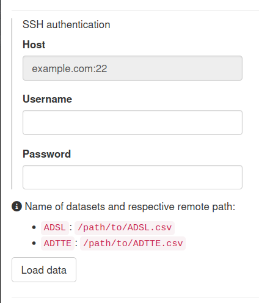

The teal.connectors.ssh package allows SSH data to be pulled into teal applications. The app developer can be used as a teal_data_module in your teal application.
Key features
- Define one or more paths to the data in the remote server.
- The data names that will be associated with the data.
- Function to use to read the data. with
utils::read.csvas the default.- Extra arguments on
ssh_connectorcall will be passed to this function.
- Extra arguments on
-
(optionally) The host of the remote server.
- If not defined, the user must input it manually.
For an example as to how this works see the example app in the help page: help(ssh_connector).
Installation
install.packages("teal.connectors.ssh", repos = c("https://insightsengineering.r-universe.dev", getOption("repos"))))
# install.packages("pak")
pak::pak("insightsengineering/teal.connectors.ssh@*release")Alternatively, you might also use the development version.
install.packages("teal.connectors.ssh", repos = c("https://pharmaverse.r-universe.dev", getOption("repos")))
# install.packages("pak")
pak::pak("insightsengineering/teal.connectors.ssh")Example
library(teal.connectors.ssh)
x <- ssh_connector(
paths = list(ADSL = "/path/to/ADSL.csv", ADTTE = "/path/to/ADTTE.csv"),
host = "example.com:22"
)
app <- teal::init(data = x, modules = list(teal::example_module()))
shiny::shinyApp(app$ui, app$server)

Example of sample application